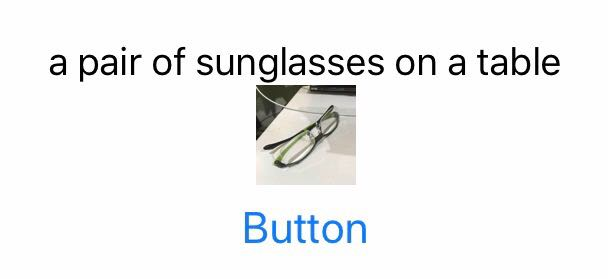
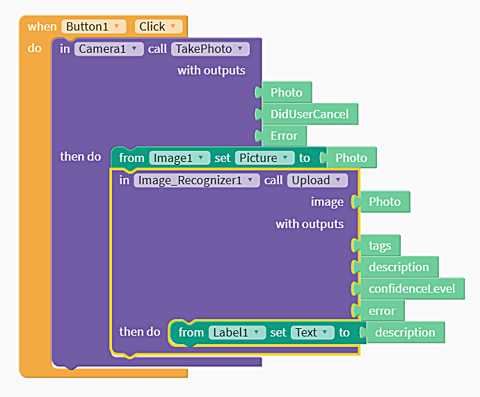
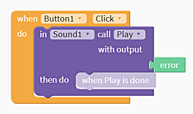
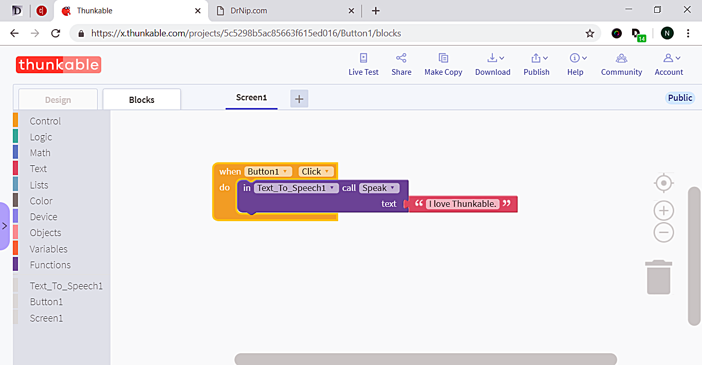
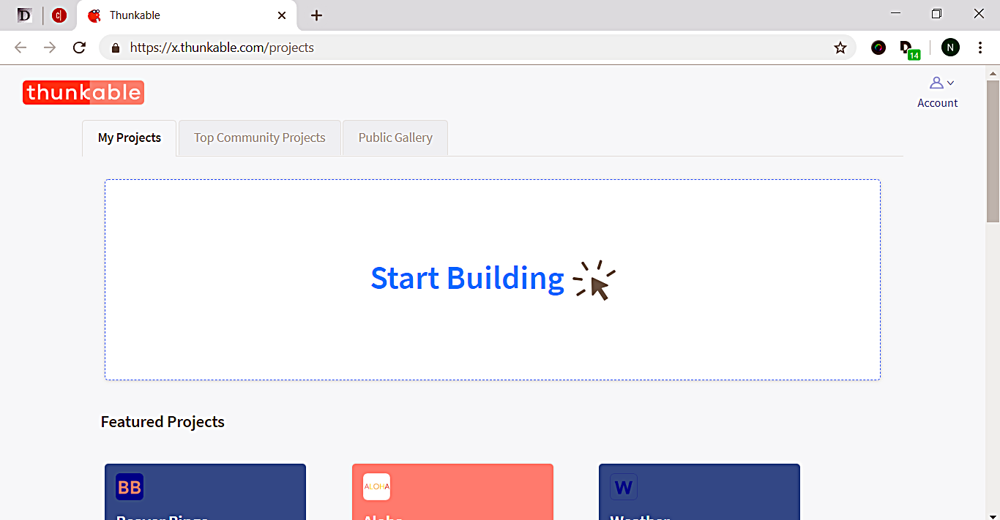
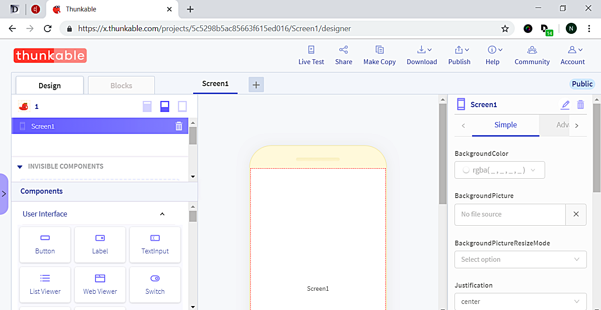

Image Recognition
โดย นิป เอมรัฐ
จาก User Interface ลาก Button ไปวางยังโทรศัพท์
จาก Image ลาก Image ไปวางยังโทรศัพท์ เหนือปุ่ม
จาก Image ลาก Camera ไปวางยังโทรศัพท์ Camera1 จะปรากฏที่ด้านล่างของโทรศัพท์
คลิกแท็บ Blocks เพื่อเริ่มเขียนโปรแกรม
คลิก Button1 เพื่อเปิดลิ้นชักของ Button1 ออกมา
ลาก "when Button1 Click" ไปวางยังโทรศัพท์
เปิดลิ้นชัก Camera1 ลาก "in Camera1 call TakePhoto" มาวางที่ "when Button1 Click" จะมีเสียงดังขึ้น เมื่อวางถูกตำแหน่ง
เปิดลิ้นชัก Image1 ลาก "from Image1 set Picture to" มาวางที่ "in Camera1 call TakePhoto"
ลาก "photo" มาวางยัง "from Image1 set Picture to"
คลิก Live Test
แตะคำว่า Button ในแอป โทรศัพท์ของคุณจะเปิดกล้องออกมา
กดปุ่มถ่ายภาพ เลือกคำสั่ง Use Photo ภาพจะปรากฏขึ้นเหนือปุ่ม
กลับมาที่ design จาก User Interface ลาก Label มาวางใต้ปุ่ม
จาก Image ลาก "Image Recognizer" ไปวางยังโทรศัพท์
เปิดลิ้นชัก Image_Recognizer1 ลาก "in Image_Recognizer1 call Upload" มาวางที่ "in Camera1 call TakePhoto"
ลาก "photo" จาก Camera1 ไปวางที่ซ็อกเก็ต "image" ของ Image_Recognizer1
เปิดลิ้นชัก Label1 ลาก "from Label1 set Text to" มาวางที่ "in Image_Recognizer1 call Upload"
จาก Image ลาก "description" จาก Image_Recognizer1 ไปวางที่ "from Label1 set Text to"
คลิก Live Test
แตะคำว่า Button ในแอปเพื่อทดสอบการทำงานของ Microsoft Image Recognition ไชโย!


สุ่มคำตอบ
โดย นิป เอมรัฐ
จาก User Interface ลาก Button ไปวางยังโทรศัพท์
จาก User Interface ลาก Label ไปวางยังโทรศัพท์
คลิกแท็บ Blocks เพื่อเริ่มเขียนโปรแกรม
คลิก Button1 เพื่อเปิดลิ้นชักของ Button1 ออกมา
ลาก “when Button1 Click” ออกมาวางยัง blocks editor
เปิดลิ้นชัก Label1 ลาก "from Label1 set Text to" มาวางที่ "when Button1 Click" จะมีเสียงดังขึ้น เมื่อวางถูกตำแหน่ง
เปิดลิ้นชัก Lists ลาก "random item of list" มาวางที่ “from Label1 set Text to”
เพิ่มข้อความลงในบล็อกแรก
คลิก Live Test
แตะคำว่า Button ในแอป โทรศัพท์ของคุณจะสุ่มแสดงข้อความที่คุณกำหนดไว้ออกมา ไชโย!
รูปบนปุ่ม
โดย นิป เอมรัฐ
ที่คุณลักษณะของปุ่ม ด้านขวามือของจอ ลบชื่อปุ่มในช่อง Text อัพโหลดรูปภาพที่จะแสดงบนปุ่มในช่อง BackgroundPicture ปรับขนาดปุ่มตามต้องการ เลือก Absolute Size ในช่อง Height และ Width พิมพ์ตัวเลขขนาดที่ต้องการ เช่น 200 และ 200
ดาวน์โหลดและติดตั้งแอปที่สร้าง
โดย นิป เอมรัฐ
คลิก Download
เลือก Download iOS App หรือ Download Android App
ใส่อีเมลลงในช่อง Email:
คลิกปุ่ม Send
จะได้รับลิงค์ดาวน์โหลดแอปภายในเวลาไม่นาน
จากนั้น ใช้โทรศัพท์หรือแท็บเล็ตดำเนินการ ดังนี้
เปิดอีเมลดูจดหมายที่ส่งมาจาก Thunkable
แท็บเลือกปุ่ม Tap to Download
เลือก Open with: Safari
เลือกปุ่ม Download
ให้เลือก Install
แอปจะถูกติดตั้งลงในเครื่องของคุณ
ตั้งชื่อแอป และเปลี่ยนโลโก้
โดย นิป เอมรัฐ
คลิกเล่นเสียง
โดย นิป เอมรัฐ
จาก User Interface ลาก Button ไปวางยังโทรศัพท์
จาก Voice ลาก Sound ไปวางยังโทรศัพท์
เลือก Upload files เพื่ออัพโหลดไฟล์เสียง หรือ..
เลือก Type in URL เพื่อระบุตำแหน่งของไฟล์เสียง เช่น https://drnip.github.io/audio/friend.mp3
คลิกแท็บ Blocks เพื่อเริ่มเขียนโปรแกรม
คลิก Button1 เพื่อเปิดลิ้นชักของ Button1 ออกมา
ลาก “when Button1 Click” ออกมาวางยัง blocks editor
เปิดลิ้นชัก Sound1 ลาก "in Sound1 call Play" มาวางที่ "when Button1 Click" จะมีเสียงดังขึ้น เมื่อวางถูกตำแหน่ง
คลิก Live Test
แตะคำว่า Button ในแอป โทรศัพท์ของคุณจะเล่นเสียงที่คุณกำหนดไว้ออกมา ไชโย!
เคล็ดลับ
คลิกแท็บ Design เลือก Button1
ที่คุณลักษณะของ Button1 คลิกที่ช่อง Text
พิมพ์ชื่อเพลง ชื่อเพลงจะปรากฏที่ปุ่ม

มือถือพูดได้
โดย นิป เอมรัฐ
จาก User Interface ลาก Button ไปวางยังโทรศัพท์
จาก Voice ลาก Text-to-Speak ไปวางยังโทรศัพท์
คลิกแท็บ Blocks เพื่อเริ่มเขียนโปรแกรม
คลิก Button1 เพื่อเปิดลิ้นชักของ Buttone1 ออกมา
ลาก “when Button1 Click” ออกมาวางยัง blocks editor
เปิดลิ้นชัก Text_to_Speech1 ลาก "in Text_to_Speech1 call Speak" มาวางที่ "when Button1 Click" จะมีเสียงดังขึ้น เมื่อวางถูกตำแหน่ง
เปิดลิ้นชัก Text ลาก text ว่าง มาวางที่ช่องว่างของ "in Text_to_Speech1 call Speak"
พิมพ์ข้อความลงในช่องว่าง เช่น "I love Thunkable"
คลิก Live Test
แตะคำว่า Button ในแอป โทรศัพท์ของคุณจะพูดข้อความที่คุณกำหนดไว้ออกมา ไชโย!

Text-to-Speech
โดย นิป เอมรัฐ
สร้างแอปพูดได้ จากข้อความภาษาอังกฤษที่เราพิมพ์
ลากคอมโพเนนท์ปุ่ม (Button) ไปยังโทรศัพท์
ลากคอมโพเนนท์ข้อความ-พูด (Text-to-Speech) ไปยังโทรศัพท์
Blocks > Button1
ลากบลอกไปยัง Blocks Editor
When button1 click
do in Text-To-Speech1 call Speak
text "Hello, Nip."
Thunkable. (2018, Aug 9). Thunkable X Beginner Tutorial #2 "Text-to-Speech". Restrieve from https://www.youtube.com/watch?v=_n1NMgVU-y8
Thunkable X Playlist
โดย นิป เอมรัฐ
เรียนรู้การสร้างแอป วีดิโอจากบริษัท Thunkable
VIDEO
เริ่มต้นสร้างแอป (platform)
การเตรียมพร้อม
ไปที่ thunkable.com
Log in ด้วยบัญชีของเราที่ใช้กับ Google เช่น nip@gmail.com
ดาวน์โหลด/ติดตั้งแอป Thunkable Live จาก App Store หรือ Play Store ตามระบบที่เราใช้งาน
ล็อกอินเข้าไปในแอป
คลิกปุ่ม Live Test ที่หน้าเว็บในคอมพิวเตอร์
เราจะลงบันทึกเข้า (login) ทั้งเว็บและแอปพร้อมๆ กัน ชึ่งจะช่วยในการทดสอบ คือ ขณะที่เรากำลังสร้างแอปอยู่ เราสามารถทดสอบแอปได้จากแอป Thunkable Live ในมือถือหรือแท็บเล็ต โดยคลิก Live Test บนหน้าเว็บ
หน้าจอ ประกอบด้วย
App designer pane
Components section
Blocks section


Thunkable. (2018, Aug 9). Thunkable X Beginner Tutorial #1 "Platform Overview". Restrieve from https://www.youtube.com/watch?v=YrONgW8udmM
สร้างแอปของเราเองด้วย Thunkable
โดย นิป เอมรัฐ
Thunkable
ใครๆ ก็สามารถสร้างแอปของตัวเองได้ง่ายๆ ด้วย Thunkable
แทนที่จะต้องเขียนรหัสคอมพิวเตอร์ (code) เราเพียงลากส่วนประกอบ (components) นำมาวางเชื่อมต่อกันเป็นบล็อก (blocks) งานที่สร้างขึ้นสามารถใช้ได้ทั้งในอุปกรณ์ที่ใช้ระบบ Android และ iOS (cross platform) นอกจากนี้ เรายังสามารถนำตัวอย่างงานจากห้องแสดงผลงาน (gallery) มาปรับแต่งใช้งานได้ หากมีปัญหาติดขัดหรือคำถามใดๆ ก็ยังมีชุมชนผู้ใช้จำนวนมากที่คอยช่วยเหลือ ที่สำคัญคือ เราสามารถใช้ได้ฟรี โดยไม่จำกัดจำนวนงาน
Thunkable มีสองรุ่น คือ Thunkable Classic Android สำหรับอุปกรณ์ระบบ Android และ Thunkable X หรือ Thunkable Cross Platform ที่สามารถใช้ได้ทั้งระบบ Android และระบบ iOS
บรืษัท Thunkable (thunkable.com) ก่อตั้งโดย Arun Saigal และ WeiHua James Li
ขั้นตอนการสร้างแอปด้วย Thunkable
Links:
อ่าน:Who Would Have Thought A Research Project Could Become A Great Startup? Retrieve from https://www.forbes.com/sites/frederickdaso/2018/06/13/who-would-have-thunk-a-research-project-could-become-a-great-startup/#280fc7691cca
การสร้างแอปพลิเคชันด้วย Thunkable
โดย นิป เอมรัฐ
เอกสาร PDF เกี่ยวกับ App Inventor ซึ่งเป็นต้นแบบของ Thunkable แนะนำให้อ่านประกอบ
ดาวน์โหลด Click
ฝังไฟล์เอกสาร PDF ลงในหน้าเว็บด้วยรหัสต่อไปนี้
<object width="400" height="400" data="appinventor.pdf"></object>
คำแนะนำ
โดย นิป เอมรัฐ
บทเรียนนี้อาจไม่เหมาะสำหรับครูคอมพิวเตอร์ เนื่องจากง่ายเกินไป